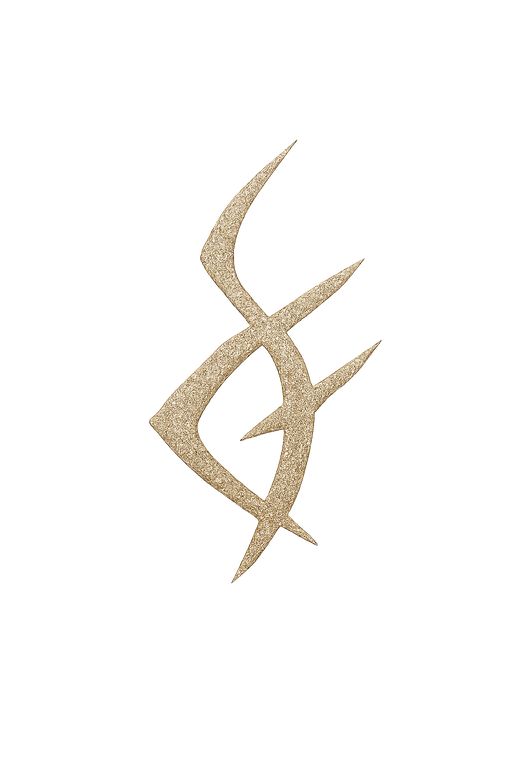

No todas las puertas están marcadas.
Algunas se abren por resonancia.
Esta es la primera: el origen fragmentado.
Origen I – Densidad Suspendida
Origen II – Gestación Interior
Origen III – Fractura en Silencio
